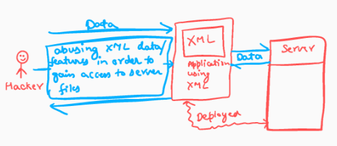

- XML External Entity (XXE): -
- It abuses features of XML parsers/data(features) in order to interact with any backend systems that the application itself can access.
- Can cause DOS or SSRF inducing the web application to make requests to other applications.
- XXE may even enable port scanning and lead to remote code execution.
- 
- Two Types:-
- 1. In- Band - An in-band XXE attack is the one in which the attacker can receive an immediate response to the XXE payload.
- 2. Out of band - out-of-band XXE attacks (also called blind XXE), there is no immediate response from the web application and attacker has to reflect the output of their XXE payload to some other file or their own server.
- Details about XML:-
1. It is markup language that prepares the structure and design for the data, basically used for representation of the data on a webpage or mobile app page. These are presentational languages and it doesn’t include any kind of logic or algorithm
2. Platform and programming language Independent and case sensitive.
3. XML allows validation using DTD and Schema to ensure that the XML document is free from any syntax error.
4. doesn’t require any conversion when transferred between different systems.
5. Every XML document mostly starts with XML Prolog - <?xml version="1.0" encoding="UTF-8"?> - It specifies XML version and encoding used.
6. Every XML document must contain a `ROOT` element.
7. In the above example the <mail> is the ROOT element of that document and <to>, <from>, <subject>, <text> are the children elements. 
DTD in XML:-- DTD stands for Document Type Definition that defines the structure and the legal elements and attributes of an XML document.
- !DOCTYPE is used to define root element.
- !ELEMENT is used to define new element.
- !ENTITY is used to define new entity.
- #PCDATA means parseable character data.
XXE PAYLOAD:-
- By default, the private key is stored in ~/. ssh/id_rsa within your user’s home directory